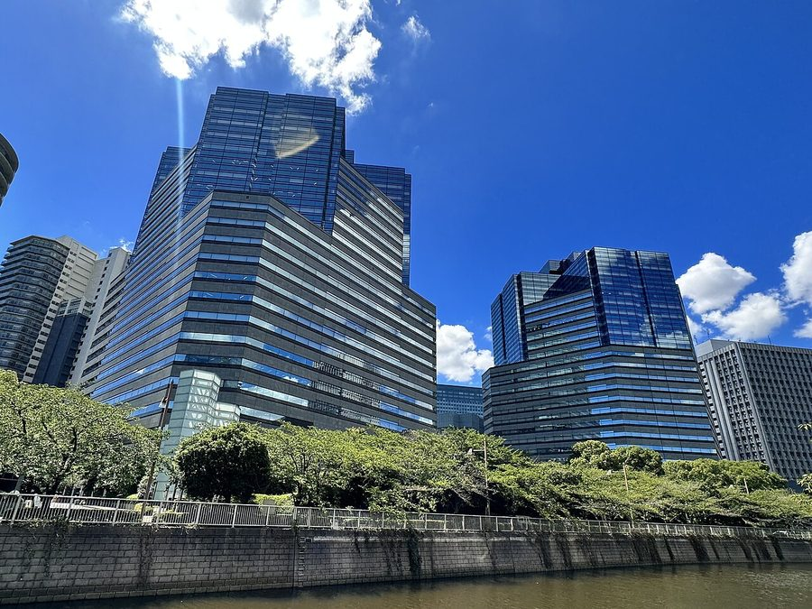
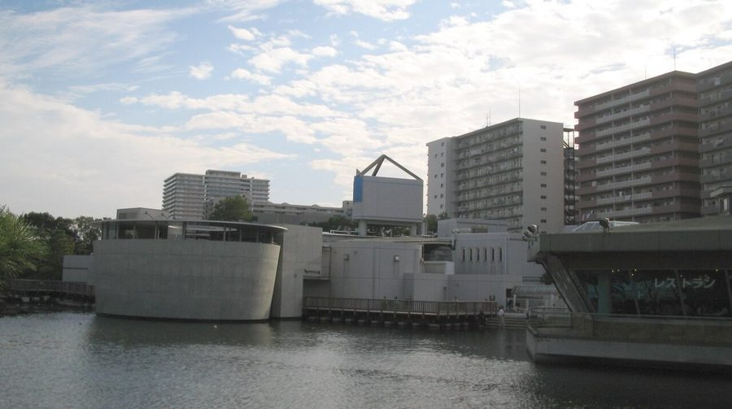
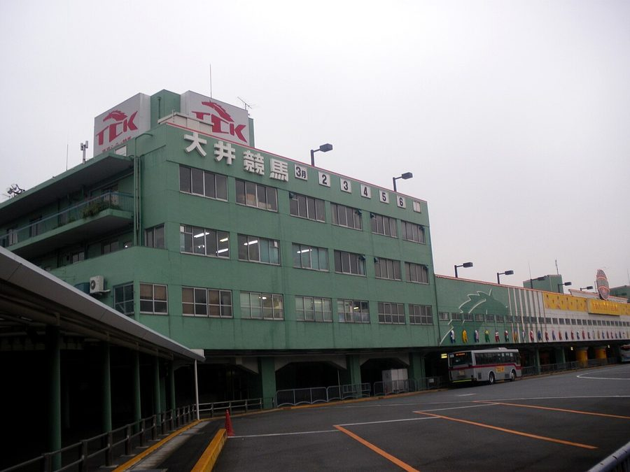
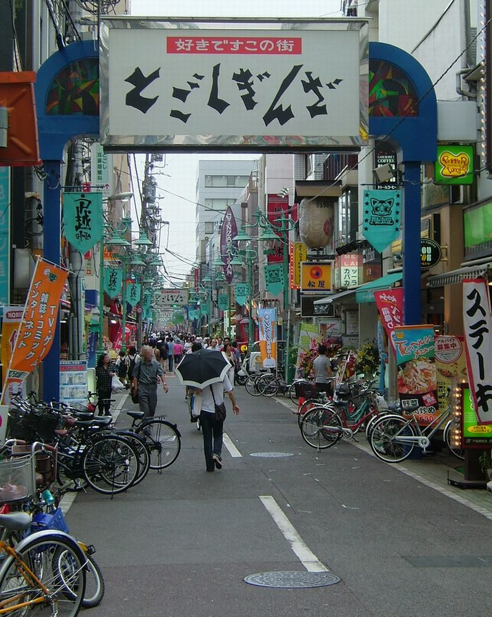

東京都品川区の日帰り温泉・銭湯・サウナ（29件）
寄り道スポット検索アプリ「ヨッテコ」の収録データから、東京都品川区の日帰り温泉・銭湯・サウナを営業時間・料金つきで一覧にしました（2026年8月時点）。
最も安いのはすえひろ湯（550円）。最も遅くまで入れるのはドシー五反田（翌11:00まで）。朝風呂ならSmart Stay SHIZUKU品川大井町（5:00開店）。
東京都品川区はどんなまち？
数字で見る🔍東京都品川区
まちの横顔




- 区の成り立ちと名前の由来: 品川区は1947年、旧品川区と旧荏原区が合併して発足しました。新区名には「大井区」「東海区」「城南区」などの候補もありましたが、旧品川区の名がそのまま踏襲され、同時期に生まれた東京都内の特別区の中で唯一、旧区名が新区名に採用された区となりました。区名は、東海道で最初の宿場だった品川宿に由来します。
- ビジネス街への発展: 実は「品川駅」は品川区ではなく港区にあり、逆に「目黒駅」は目黒区ではなく品川区にあります。東京湾岸の埋立地には品川コンテナ埠頭や東京貨物ターミナル駅が広がる一方、大崎駅・五反田駅周辺（大崎副都心）や東品川（天王洲アイル・品川シーサイド）は再開発でオフィス街に発展しました。五反田はITベンチャーの街としての顔も持ち、大井町駅は3社3路線が乗り入れる交通の結節点です。
- 住宅地の顔: 区域の大部分は住宅街で構成されています。御殿山など「城南五山」と呼ばれる地域は山手の高級住宅街として知られる一方、戸越銀座商店街で知られる戸越など、庶民的な住宅地も多いのが特徴です。
寄り道充実度（全国偏差値）
偏差値・順位は、ヨッテコ収録データ（2026年8月時点・26,033件）を市区町村別に集計した施設数の全国分布（1,728市区町村）から毎回算出しています。カードを押すとカテゴリ別の分析に切り替わります。
日帰り温泉から見た東京都品川区
区内の日帰り温泉は29件、全国71位タイ（上位4.1%）。——湯の選択肢は、全国の上位5%に入る。
- 露天風呂を備える店は31%。全国水準の46%より少なめです。湯を楽しむ舞台は、屋外ではなく屋内に寄っています。
- 天然温泉を使う店は17%で、全国水準（67%）を下回ります。湧いている湯よりも、通いやすさで選ばれる施設が多いということになります。
- サウナ併設は76%。全国の52%を1.5倍上回ります。湯とサウナをセットで考えるまち、と言えそうです。
- 21時以降も営業する店は97%、全国水準（40%）の2.4倍。移動が遅くなった日でも、間に合う湯が見つかりそうです。
- 入浴料の中央値は550円でした（判明28件）。全国の650円より15%低い水準です。気軽に立ち寄れる金額に収まっています。
出典: 施設データ=ヨッテコ収録データ（26,033件・2026年8月時点）。偏差値・全国順位・全国水準は全1,728市区町村の分布から毎回算出。 / 人口=総務省「住民基本台帳に基づく人口、人口動態及び世帯数」（2026年1月1日現在） / 面積=国土地理院「全国都道府県市区町村別面積調」（2026年4月1日時点） / 森林率=農林水産省「2025年農林業センサス（農山村地域調査）」市区町村別林野率（2025年、林野率（林野面積÷総土地面積）） / 年平均気温=気象庁「平年値（1991-2020年）」。市区町村の代表点（国土交通省「大字・町丁目レベル位置参照情報」）から最も近い観測点の値 / まちの解説=日本語版Wikipedia「品川区」（https://ja.wikipedia.org/wiki/品川区、2026年8月21日取得）より作成（CC BY-SA 4.0） / 写真=Wikimedia Commons（各キャプションに作者・ライセンスを記載）
曜日別の営業施設数
| 月 | 火 | 水 | 木 | 金 | 土 | 日 |
|---|---|---|---|---|---|---|
| 22 | 26 | 26 | 29 | 26 | 27 | 29 |
月曜日が最も休みが多く（各7件が定休）、年中無休は12件です。※営業時間データのある29件で集計
入浴料金の分布（大人）
| 501〜800円 | 20件 | |
| 801〜1,200円 | 2件 | |
| 1,201円以上 | 6件 |
料金が確認できた28件で集計。
施設一覧
| 施設 | 営業時間 | 料金（大人） |
|---|---|---|
| SAUNA XX サウナエックス目黒駅前店 サウナ | 06:00〜25:00 | 2,420円 |
| Smart Stay SHIZUKU品川大井町 サウナ 品川区のカプセルホテル。大浴場にはオートロウリュ完備のサウナと水風呂、ととのいいすを備え、宿泊客は無料で利用できる。日帰… | 05:00〜25:00 | 800円 |
| TOTONOUCHI サウナ レンタルスペース併設のサウナスタジオ。撮影利用がメイン。プロジェクター・ネイル・楽器演奏スペース等多機能。 | 08:00〜23:00 | 3,400円 |
| おふろの王様 大井町店 露天風呂サウナ 大井町駅直近の日帰り温浴施設。人工温泉とサウナ、岩盤浴を完備。プロジェクションマッピングを用いたロウリュウ体験が特徴。 | 09:30〜24:00 | 1,500円 |
| すえひろ湯 サウナ | 15:00〜25:00 ※曜日により異なる | 550円 |
| みどり湯 サウナ | 14:45〜24:00（火休） | 550円 |
| サウナスナック「かなこ」 サウナ サウナとスナックが融合した昭和レトロとモダンの融合空間。完全プライベートなサウナ体験を提供。 | 09:00〜30:00 | — |
| サウナメッツァ 大井町トラックス サウナ 日本初のトラムサウナを備える上質に整う都市のリカバリースパ。多様な利用スタイルに対応した設備を完備。 | 06:00〜26:00 | 1,980円 |
| スゴイサウナ五反田駅前店 サウナ 東京・五反田のマグマスパ式サウナ。 | 07:00〜26:00 ※曜日により異なる | 3,500円 |
| ドシー五反田 サウナ 五反田のカプセルホテル・ホステル。フィンランド仕様のロウリュサウナとウォーターピラー設備を完備。日帰り利用もできる。 | 15:00〜35:00 | 1,000円 |
| ピース湯 露天風呂サウナ | 15:30〜24:00 ※曜日により異なる | 550円 |
| プライベートサウナ Ladle サウナ 五反田駅から徒歩1分の完全個室プライベートサウナで、フィンランド式の本格的な環境を提供。 | 12:50〜22:10 | 3,980円 |
| 中延温泉 松の湯 天然温泉露天風呂サウナ 昭和23年創業。日本庭園を眺めながら入浴できる露天風呂とロッキーサウナが特徴。 | 15:00〜24:00 ※曜日により異なる | 550円 |
| 中延記念湯 露天風呂サウナ 品川区旗の台の銭湯。男女露天風呂とスチームサウナ、8種類のお風呂が特徴。無料レンタル品（タオル、シャンプー等）で手ぶら入… | 14:00〜25:00 ※曜日により異なる | 550円 |
| 北品川温泉 天神湯 天然温泉 品川区北品川にある銭湯。地下100メートルから汲み上げた黒湯は、古生代からの植物が分解された有機物を含む天然温泉。 | 15:00〜23:00（金休） | 550円 |
| 吹上湯 品川区北品川の銭湯。北品川駅から徒歩3分。 | 15:30〜22:30（水・土休） | 550円 |
| 大盛湯 | 15:00〜23:00（金休） | 550円 |
| 富士見湯 サウナ | 15:00〜23:30 ※曜日により異なる | 550円 |
| 戸越銀座温泉 天然温泉露天風呂サウナ | 15:00〜25:00 ※曜日により異なる | 550円 |
| 新生湯 露天風呂サウナ 全国初の健康増進型銭湯。炭酸泉・流水歩行プール・露天風呂・遠赤外線コンフォート岩塩サウナなど14種18の浴槽を備えた施設… | 15:30〜24:00 ※曜日により異なる | 550円 |
| 星の湯 品川区の銭湯。薬湯や充実した設備が評判。中延駅近くに位置する。 | 15:00〜24:00（土休） | 550円 |
| 東京浴場 | 15:00〜22:00（月休） | 550円 |
| 武蔵小山温泉 清水湯 天然温泉露天風呂サウナ 品川区武蔵小山にある2種類の天然温泉を備えた銭湯。黒湯と黄金の湯を交互に楽しめ、療養泉の認定も受けている。 | 12:00〜24:00 ※曜日により異なる | 550円 |
| 水神湯 昭和27年創業の銭湯で、肌あたりが柔らかく体の芯から温まると評判の浴場。 | 15:00〜22:00（月休） | 550円 |
| 泊まれるサウナ屋さん 品川サウナ 露天風呂サウナ 大井町駅徒歩1分の、泊まれるサウナ施設。複数のサウナ・水風呂・屋上外気浴と露天風呂を備えた大型施設で、宿泊も可能。 | 05:30〜26:30 | 980円 |
| 西品川温泉 宮城湯 天然温泉露天風呂サウナ メタケイ酸を含む天然温泉が特徴。親子で触れ合える入浴施設として親しまれている。 | 15:00〜24:00（水休） | 550円 |
| 西小山 東京浴場 サウナ 駅徒歩1分の銭湯で、2020年7月にリニューアルオープン。深さ85cm のブランデー樽水風呂や漫画7000冊の読み放題が… | 05:00〜12:00 | 550円 |
| 金春湯 サウナ 昭和25年創業の品川区大崎の銭湯。昔ながらの良いところを残しつつ新しいものを取り入れる方針。地域の方々が集まり楽しめる場… | 15:30〜24:00 ※曜日により異なる | 550円 |
| 高松湯 品川区上大崎の銭湯。目黒駅近く、自然教育園の訪問後に利用するのに最適な立地。 | 16:00〜22:00（月休） | 550円 |